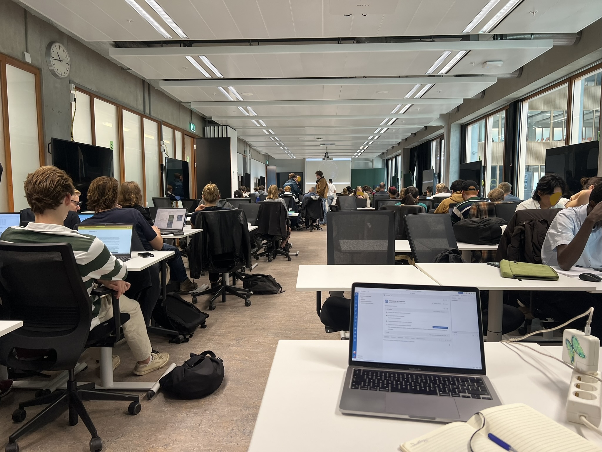
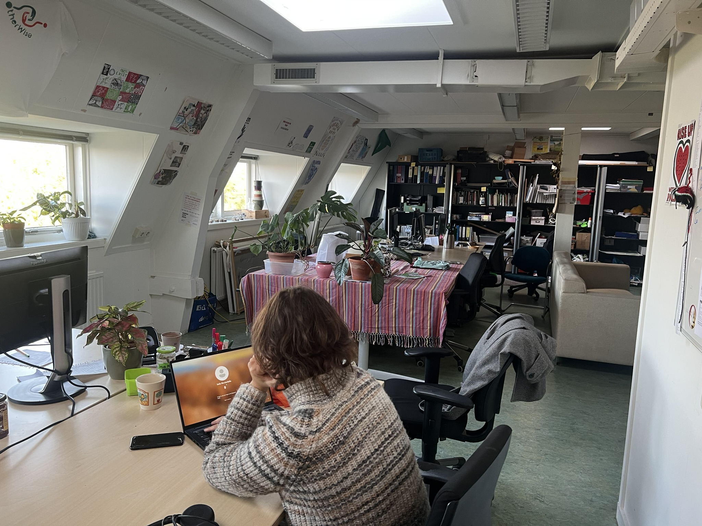
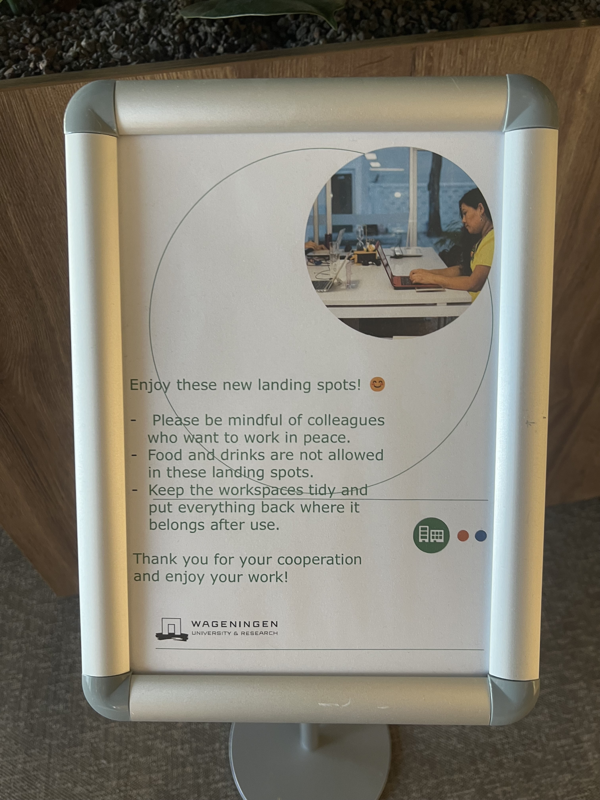
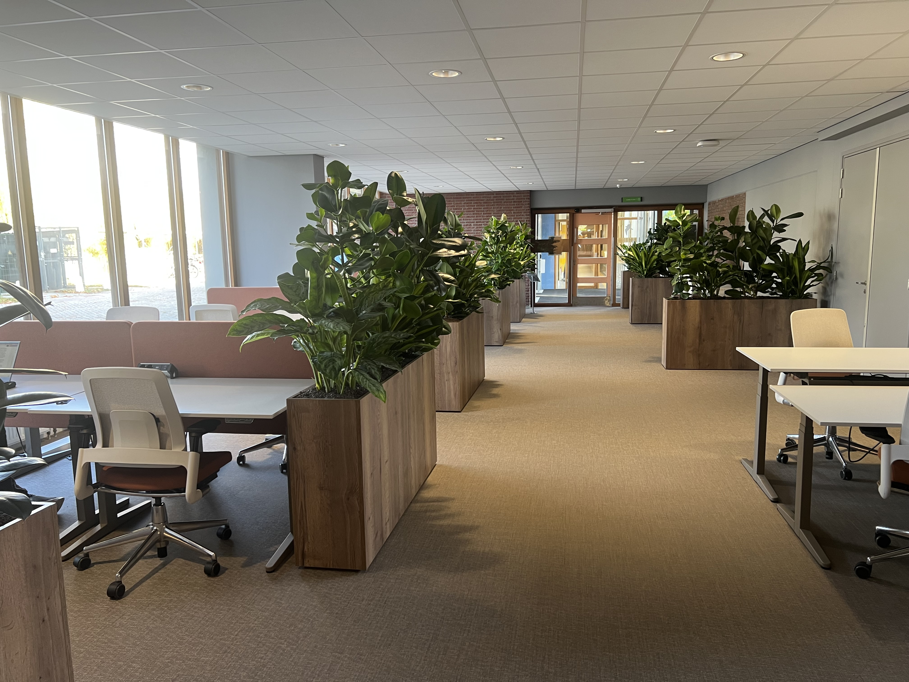

Dwelling and Lodging in Student Office Spaces
Seila Ricciardella & Tobias Otto
This essay was a blast to write together with Seila. We wrote it for a class we're taking together called "Embodied Ecologies", which has reminded me why I love social science and theory for giving a new perspective on things that seem both obvious and revolutionary. We used mainly used concepts from Jane Howarth's "The Crisis of Ecology: A Phenomenological Perspective" to look at the work spaces we encountered in our student day-to-day in Wageningen: Forum, the monolithic main building on the university campus, and The Clockhouse, a quirky old university building off campus that (for another couple months still before it's sold) houses the university's critical and music groups.
Forum vs. The Clockhouse: Two ’offices’ for student work
For this assignment to explore each other's dwellings, we decided to explore places where we spend a lot of time, yet that one might not immediately (or at all) understand as a dwelling. Every day, Toby's morning course takes them to room B0521+B0525 in Forum, a long classroom with white ceiling lights where 50 or 60 students sit to work on remote sensing practicals: scripting, clicking through geobrowsers, and answering questions in a Word document in pairs.

Forum B0521+B0525, 10:43 am. An office in the broader sense,
and a
lodging in the Heideggerian sense.
This setting we compared with the Otherwise office in the attic of The Clockhouse, where Seila comes
a
couple times a week for her internship, building a period 3 and 4 course by sending emails, reading
books and designing posters on her laptop. Both of these spaces can be described as student offices,
where rotating groups of students come to work on their laptops, but the differences between them
are
stark.
The Clockhouse office is clearly a dwelling. Care has been put into every corner of the space: activist posters adorn the walls, a tablecloth the desk and plants the windowsill, a blanket and tea kettles stand by for wintry days, and metal beams jutting from the wall have been padded with cut-up tennis balls. All these modifications to what were university classrooms and office spaces make a dwelling of the office: they "indicate, signify, mean a dweller"

The Forum classroom is characterized by a distinct lack of dwelling. The tables and chairs are
uniform,
the walls unadorned, even the white- and blackboards are impressively blank. Even small signs of
previous habitation are absent: no table has doodles or etchings, and a glance under the tables
reveals
an impressive absence of stickers or gum. Students sit in rows, mostly with their backs to each
other,
and instructors patrol the classroom along the narrow corridor between the tables, and will cold
call on
students to check if there's questions
The feeling of surveillance within the classroom extends also to the rest of
the building: windows along the hallways and interior windows towards the library make it
incredibly easy for anyone to look in at any time. This Foucauldian panopticon is replicated in
many university buildings, including Gaia/Lumen which is rumored to have been built by an
architect who, fittingly, designed prisons before. It's also worth pointing out the study
association rooms on the first floor of Forum, where, as a necessary step towards dwelling in
the rooms, the associations have plastered the windows full with posters.
Around 11:15, a teacher addresses the room to please wrap up the work and get the room back in
order; at 11:30, the
next class will come in to the room to do "some consumer studies stuff". Students pass through the
room, without having shaped it. This space is not really a dwelling, but rather, in the words of
Howarth (1995), a lodging. In this essay, inspired by our observations in the two different 'office'
spaces we reflect on the difference between dwelling and lodging and the implications that a the
virtual habitat of our computers has on our relationship with place.
Methods
We wrote this essay together, based on discussions we had during and after our visits to our respective office spaces. We wrote separate sections of the text, however the content of each section is the result of our joint ideas and debates. Once the sections were written, we edited and adjusted each others passages. When speaking to our shared process and opinions, we use "we", and when sharing illustrative experiences, we use "I" where appropriate, and indicate the identity of the "I" where necessary.
Dwelling and its Impossibility
A neon white light illuminated the dark, gray room. At the center there was one big table with some mismatched chairs around it. Leaning against the wall were some cold metal seats—a cross between chairs and benches. In the background hums the vending machine. That was the only common room in my, Seila's, music conservatory. Quite an inhospitable cold room where I used to sit with my coat on.
WUR spaces look like they had been taken straight from a design magazine, with their thought-through color combinations, unchipped and unscratched tables and unvarying wall paint. A symphony of 'un-', of absence. As far as my cold music university school was inhospitable, it was a dwelling, while WUR spaces are often characterized by the impossibility of it.
'To me, you are still nothing more than a little boy who is just like a hundred thousand other little boys... But if you tame me, then we shall need each other. To me, you will be unique in all the world. To you, I shall be unique in all the world"
When the Little Prince saw the Fox for the first time, they were just a boy and a fox. In the same way, the first time we enter a room and interact with its objects we are just a person and objects. For this subject-object relation to be transformed into a dweller-dwelling relation time is needed to "tame" each other, to establish a unique tie shaped by the person's habits and the object's characteristics. Time is the catalyst of this transformation. A space becomes an "impossible dwelling" once time is removed from the equation, either because people are physically disabled from spending time in a space (e.g. through hostile architecture), or because the visual passing of time is erased by continuous renewal of the objects, so that the object's embodied memory is erased as they are replaced by identical copies.
Chairs that in the music university would have been bought once to last until they broke are cyclically replaced at WUR before they reach their "expiry date", why? The signified dimension of an object (the sign) changes as time leaves its mark on it, and depending on the context, for the simplicity of the argument we will limit ourselves to the 'university context'. A used chair that at a certain point in history might have \textit{signified} a lived space and generations of people passing through it, within the context of WUR signifies neglect. We can observe a radical difference between those spaces that are open to the visitor and passerby, and those that are more "hidden" such as the thesis room I am writing from where the lamp is crooked and the curtain is broken (however the chairs and desks are impeccable as usual) Are the crooked lamp and the broken curtain signs of dwelling? I would argue not. Something broken doesn't necessarily imply that it has been "lived". The perfect modern aesthetic that is upheld by WUR signifies professionalism, prestige, and wealth, but more importantly it is untouched, unscarred and untimely, telling all of us: "you are just temporary and passing by. Leave the classroom in 15 minutes, and leave it exactly the way you found it". There is no ownership that transient beings can claim over the immanence of the university.
In contrast, the immanence of the Clockhouse office as (a detached) part of the university is historical. Time is recorded through the different modifications that took place over time. Each element and scratch tells us about a story of use and presence, signaling to students: "You are just temporary and passing by, but other students will build and learn from what you leave".
The Laptop as Habitat
Any consideration of the offices that we find ourselves in daily is not complete without considering the main activity we perform while in these spaces: typing on our laptops. Not only is being on the laptop the essential function that we come to the habitat We shift here to Merleau-Ponty's 'habitat', as defined by Howarth (1995), because it lets us shift away briefly from the question of dwelling vs. lodging. Even in an office lodging, we may have certain habits that only make sense in that habitat. However, it is also possible to examine the laptop as a dwelling: there are certainly ways that each of us mould the hard- and software of our laptops to give them personal significance (stickers, your desktop layout), and conversely a public computer could easily be considered a lodging. of the office for, but we argue here that the laptop forms a habitat of its own, within which our habits make sense, performing often unconsciously as body subjects \citep{Howarth1995Crisis}. For it is only our laptop that gives significance to our actions in the office. While certain actions are imaginable, and were certainly performed in the past -- typing on typewriters, reading from books (gasp!) -- their ensemble and specificities are only given meaning by the particular assemblage of personal laptop, user, and the software, networks and data that enable this relationship, and are not exclusive to the office but exclusive to the laptop.
Many of the actions we perform on our laptops (and phones) are habitual in Merleau-Ponty's sense. Typing on the keyboard or moving the mouse, the most basic ways in which we interact with the laptop, are certainly performed with intention and skill, but not consciously. As I write this sentence, and my attention is shifted to how my fingers find the keys on the keyboard, it suddenly becomes a lot more difficult to find the right keys, let alone keep hold of the thought I'm trying to express. Similarly, higher-level habits abound within the habitat of the laptop, from reflexively opening up a website to the specific register of a professional email. Since these habits only gain significance in the presence and use of the laptop, we argue the 'world inside' This includes the conceptual 'place' that we inhabit when using our laptop, but it is also worth remembering that everything is ultimately analog: every bit and every pixel is a physical, lived part of our environment. the laptop can certainly be considered a habitat.
Nested Habitats and Vehicular Habitats
Accepting our mobile devices as a habitat creates an interesting conceptual effect: the habitat-within-habitat, e.g., the laptop within the office. These habitats are not capsuled off from each other: that we came back to the on-campus office after COVID normalized the home office shows that the setting of the office permits for a certain way of engaging with the virtual habitat of the laptop, more than our desk at home might, for instance. Being in the office (hopefully) helps us focus on the work we have to do, aided also by a social environment that is centered around work and mutual support to do that work effectively.
When we contrast the austere classrooms in Forum with the lived rooms of The Clockhouse, it becomes apparent that whether an office is a lodging or a dwelling impacts the habitat-within-habitat relationship, too. In The Clockhouse, working on the laptop feels more like a choice. Since the space offers a broader range of possibilities (niches?), it is easier to leave the virtual habitat of the laptop and dwell in the office place. Meanwhile, there is virtually no other purpose of the Forum classroom than to enable the complete escape to the virtual habitat, and the transience of this office space preserves this function above all others.
In the spirit of saying simple things with complex words, we therefore offer a distinction of nested habitats (dwelling-in-dwelling) and vehicular habitats (dwelling-in-lodging). Nested habitats enable and shape a habitat-in-habitat relationship, but the intention is that both spaces be dwelt. The phenomena of The Clockhouse invite its dwellers to live the space and leave their mark, and the office here serves for both preparation and relief from the virtual habitat. Vehicular habitats, on the other hand, are intended primarily for transport to the inner habitat. The phenomena of Forum are clear in that this space is not meant for interaction: the room is distraction-free, impersonal, and must be left exactly as it was before. Even the default configuration of the tables in lecture rows discourages any interaction with any one/any place but your laptop.
Virtual Habitats and Modernity's Lodgification
We ask ourselves how it must have been to be at university when there were no computers. You had to get creative with how to get distracted: doodling on the table or your notebook, fidgeting with a thread from the chair, leaving secret messages for whoever was coming next. Now we have an easy way out of boredom: our virtual habitats. If we are bored, online games, shopping and scrolling are but a click away. Heiddeger claims that the modern man has forgotten how to dwell \citep{Howarth1995Crisis}. That implies that more and more spaces are becoming areas that we 'pass through', or 'lodges', i.e. transition places in our physical and metaphorical movement from A to B. If modernity has initiated this process of lodgification, then the easy access to our virtual habitats has accelerated it, and vehicular habitats facilitate it. The vehicular habitat of the Forum classroom has become just a container with direction signs pointing to our virtual habitats of the computers and the PowerPoints. It now acts as a background and is redundant as a space to engage with when bored, disinterested or tired. What if boredom and tiredness were necessary feelings to dwelling in an office environment? What if boredom was our tool to measure time instead than the clock? Much more could be said about modernity's process of lodgification. As argued in previous paragraphs, dwelling requires spending time in space. During our discussion we have drawn a distinction between 'passive' time, and active time, which comprises 'productive', and 'reproductive' time. Without delving into details, the lodgification process builds onto the elimination of 'reproductive time'. When engaging in our virtual habitats to escape boredom, we trade our reproductive for productive time as within the modernity regime, in our virtual habitats we are producers/consumers.
Conclusion: Lodgification of campus
 
In refurbished Gaia, the university wants to remind you to please lodge.
From our observations it seems that the only spaces where dwelling is allowed are "semi-private" spaces, like in The Clockhouse. These are rooms that are accessible only to some, as semi-personal offices where people might return and spend time indefinitely without being held accountable of their time by others' gaze or a class schedule. Spaces for public and collective "dwelling" at WUR are shrinking, as exemplified by the refurbishing of Gaia, and the fact that the Clockhouse is being sold and organizations like Otherwise and the Jester moved to new offices on campus. The 'lodgification' of common spaces is taking a subtle form through design choices that are not overtly hostile, but that are slightly less "cozy" and more work-oriented, e.g. the disappearance in Gaia of the couches, American diner-style boots and big wooden tables for (individual) armchairs, working desks, and mononuclear tables. To us it appears that dwelling spaces are being turned into what we term as vehicular habitats, making dwelling impossible and increasing the role that our virtual habitats play as dwelling spaces.
Where diner-style booths invited lunch conversations, individual "landing spaces" now loom in Gaia.
References
Howarth, J. (1995). The Crisis of Ecology: A Phenomenological Perspective. Environmental Values, 4(1):17–30.
Saint-Exupery, A. d. (1995). The Little Prince. Diane Pub Co, London